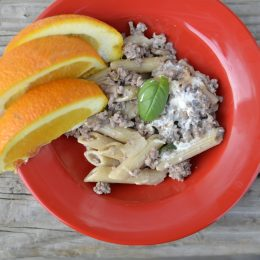

White Pasta with Beef

Course: Main
Cuisine: American
1/2 pound ground beef2 cups penne pasta2 cups vegetable broth1/2 onion2 and 1/2 cup water1/2 cup basil (chopped)1 garlic clove1/8 teaspoon ground black pepper cooking spray4 ounces cream cheese1 lemon1/2 cup grated parmesan cheese
- Add uncooked pasta, water, and broth to a large stockpot. Slice onion and add to pot along with basil, minced garlic, salt, and pepper. Cover and cook on medium-high, bringing to a boil. Remove cover and cook for 8-10 minutes or until liquid has completely absorbed, stirring occasionally.
- Meanwhile, spray a skillet with cooking spray and heat over medium. Add beef and cook until browned, stirring to crumble.
- Add beef to cooked pasta. Stir in cream cheese, 2-3 tablespoons of fresh lemon juice, zest of lemon, and Parmesan cheese.
- Serve with orange wedges on the side.
| Calories | Protein | Carbohydrates | Fat |
|---|
| 458 | 28g | 63g | 11g |
Preparation time: 15 minutes
Cook time: 20 minutes
Total time: 35 minutes
- A healthy and yummy recipe for dinner for kids, who are picky eaters.